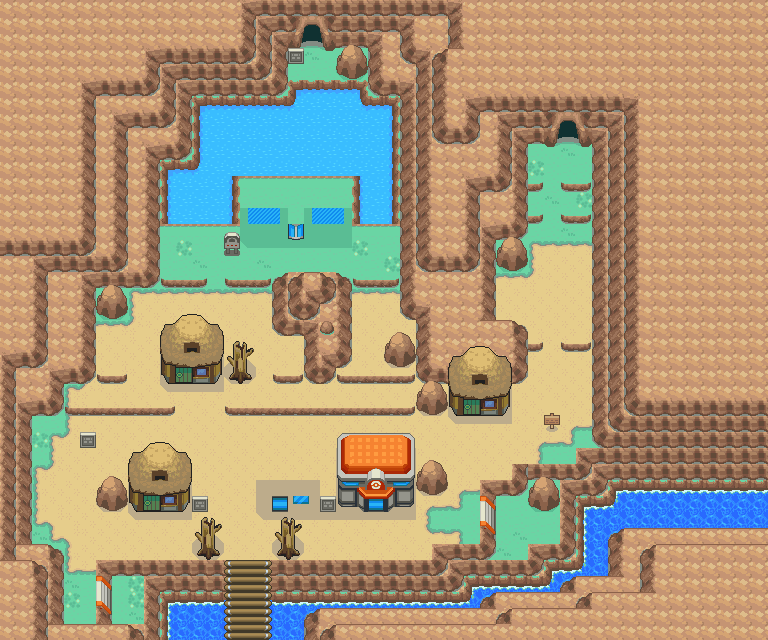
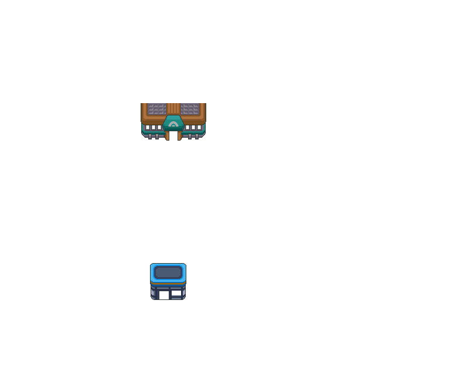

099 被解开的封印
一句话目标：用探险套装开采取得楔石，把它投入黑暗洞穴深处的深坑，复原被解开的封印。
接取地点
- 烟墨市（地图 3:71） 的 (4,31)，人物 NPC（local_id 10）。
- 交付地点：黑暗洞穴（地图 1:125） 的 (27,41)，深坑（人物 local_id 15）。
- 当前目录描述：找到楔石，并前往黑暗洞穴深处的深坑。
准备条件
- 前置剧情旗标 4246 需已置位（与旗标 4184、4880 等同组的烟墨市剧情，具体事件未定位）。
- 持有探险套装（用以开采楔石）。
- 能够到达黑暗洞穴 (1:125) 深处的深坑。
操作步骤
- 与烟墨市 (3:71) 的 (4,31) 委托人对话。未接受时他自语“这样下去可不妙……”；满足前置后他说：“我等你很久了！那个，有个很重要的事要和你说……以前城都各处发生过灾难。那是在几百年前……在城都招灾惹祸的家伙虽然被封印在了黑暗洞穴的深处……可是不知为何，封印的神奇法术被解开了……这样下去可不妙……拜托你了，把被解开的封印复原吧？”→选“是”出现“接受任务:<被解开的封印>”。
- 他补充：“黑暗洞穴的深处有个深坑，如果你找到了一种叫楔石的石头的话……把楔石放入那个深坑……应该就可以把封印复原了。楔石好像可以通过用探险套装对洞穴的墙壁进行开采获得……”（后来再问只重复深坑与楔石）。
- 用探险套装 (288) 对洞穴墙壁开采，取得楔石。
- 到黑暗洞穴 (1:125) 的深坑 (27,41) 调查：“诡异的深坑……持有的楔石看起来形状正好与之吻合。要使用楔石吗？”→选“是”。
- 放入楔石：“将所持的楔石放了进去！”→“楔石消失了……？”→“谢谢你……”
- 委托人现身道出真相：“在委托你之前，我一共找过 31 个人。所以……你是第 32 个。这样一来……封印也就解除了。曾经使用神奇法术的旅人 也应该不会和我计较了吧……谢谢你陪我。你永远都不要忘记我哦……”
- 封印解除后从深坑出现宝可梦花岩怪（495，Lv25），进入野外对战。
- 战斗结束后结算：出现“完成任务:<被解开的封印>”，获得 5 BracerPoints 与 108$，并消耗掉所持楔石。之后再调查深坑只显示“诡异的深坑……”。
交付检查
- 携带楔石 (638) 在深坑 (27,41) 使用并击退出现的目标（完成旗标 6322）。
奖励
- 5 BracerPoints
- 108$
容易卡住的位置
- 需先用探险套装开采获得楔石；放入深坑会消耗它。
- 剧情揭示委托人实为促成封印解除者，与“复原封印”的描述相反，但流程按脚本照常推进。
- 深坑在黑暗洞穴深处；本包未含从入口到 (27,41) 的具体走法。
来源与待补
- 包：
data/quest_packets/099.json。 - 接取
0x087BA75B→0x08F3E6FD→0x08F3E743；深坑调查0x08F3EDBC→0x08F3E91F→0x087B2A58→0x08F3E932；放置与战斗0x08F3EBDB；完成0x08F3EDE3。 - 相关宝可梦：花岩怪；相关道具：0638 楔石、0288 探险套装。
- 未定位：前置旗标 4246 的具体事件；
0x800C==2分支与callasm 147456081的语义未定位；从黑暗洞穴入口到深坑 (27,41) 的走法未在包内。
地点地图
共享RGB底图；点击可缩放定位。数字对应本页相关地点，不代表地图上全部事件。
烟墨市


1 被解开的封印（4,31）
黑暗洞穴

1 被解开的封印（27,41）